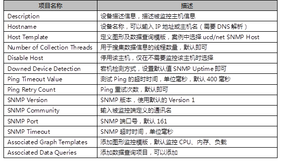

本案例要求部署一台Cacti监控主机，并安装相关监控组件，为进一步执行具体的监控任务做准备：
使用1台RHEL6虚拟机，安装部署LAMP环境、Cacti及相关的snmp组件包，配置数据库并对Cacti监控平台进行初始化操作。
实现此案例需要按照如下步骤进行。
步骤一：准备基础软件包
1）安装LAMP环境
Cacti监控需要通过Web页面展示出来，并且还需要使用MySQL来存储一些变量数据，因此需要先为Cacti准备基础LAMP环境。因为Cacti监控其他主机数据时使用的是snmp协议，所以还需要安装net-snmp和net-snmp-utils软件包。
[root@svr5 ~]# yum -y install httpd php php-mysql php-ldap \ >php-xml mysql mysql-server net-snmp net-snmp-utils lm_sensors [root@svr5 ~]# service httpd start;chkconfig httpd on //启动httpd服务 [root@svr5 ~]# service mysqld start;chkconfig mysqld on //启动mysqld服务 [root@svr5 ~]# mysqladmin -u root password '111' //设置数据库管理员密码
2）源码安装RRDTool
Cacti监控的数据存储和绘图功能主要依赖于该软件，如果没有该软件则Cacti无法存储监控数据并绘制出监控图像。
[root@svr5 ~]# tar zxf rrdtool-1.4.5.tar.gz [root@svr5 ~]# cd rrdtool-1.4.5 [root@svr5 rrdtool-1.4.5]# ./configure --prefix=/usr/local [root@svr5 rrdtool-1.4.5]# make && make install
步骤二：部署Cacti套件
1）解压部署Cacti软件包
Cacti是由PHP开发的Web页面套件，PHP代码通过使用snmp协议来获得监控数据，并代用RRDTool存储数据和绘制监控图像，所以在安装完成基础LAMP环境后，首先需要做的就是将Cacti软件包解压放置在Web服务器的网页根路径下。
[root@svr5 ~]# tar zxf cacti-0.8.7g.tar.gz [root@svr5 ~]# mv cacti-0.8.7g/ /var/www/html/cacti [root@svr5 ~]# cd /var/www/html/cacti [root@svr5 cacti]# useradd cactiuser [root@svr5 cacti]# chown -R root.root ./ [root@svr5 cacti]# chown -R cactiuser.cactiuser rra/ log/
2）创建数据库并初始化
Cacti需要使用MySQL来存储部分动态数据，这里还需要给Cacti创建一个数据库，并使用Cacti提前准备好的数据文件，对数据库进行初始化。
[root@svr5 cacti]# mysql -u root -p Enter password: //密码为前面初始化的密码 mysql> CREATE DATABASE cactidb DEFAULT CHARACTER SET utf8; //创建数据库 mysql> GRANT all ON cactidb.* TO 'cactiuser'@'localhost' IDENTIFIED BY 'pwd123'; //创建账户并赋权 mysql> QUIT [root@svr5 cacti]# mysql -u cactiuser -p cactidb < cacti.sql //初始化数据库
3）修改Cacti的PHP源码文件，指定数据库名称及相关账户信息。
[root@svr5 ~]# cd /var/www/html/cacti [root@svr5 cacti]# vim include/config.php <?php $database_default = "cactidb"; //设置数据库名称 $database_username = "cactiuser"; //设置账户名称 $database_password = "pwd123"; //设置密码 …… ?> [root@localhost cacti]# vi lib/functions.php <?php setlocale(LC_CTYPE,"zh_CN.UTF-8"); //定义语言 ……
4）调整http配置文件，重新定义根路径
httpd配置文件使用DocumentRoot "/var/www/html"语句来定义网站页面根路径，默认路径为/var/www/html/，这里需要修改为/var/www/html/cacti。
[root@svr5 ~]# vim /etc/httpd/conf/httpd.conf .. .. DocumentRoot "/var/www/html/cacti" .. ..
5）访问Cacti监控页面，并进行初始化设置
第一次登录Cacti需要进行一些简单的初始化操作，主要是设置几个主要的依赖程序的存储位置。
沿用练习一，为监控客户端主机安装net-snmp并设置监控权限，并通过调整Cacti服务端配置，实现以下目标：
准备4台Linux虚拟机，1台部署Cacti监控系统，3台作为服务器同时也是被监控的对象，拓扑结构如图-1所示。
图-1
实验沿用练习一的成果，cacti监控平台已经部署完毕，目前需要给所有被监控节点安装net-snmp，并通过修改配置文件设置监控权限。
实现此案例需要按照如下步骤进行。
步骤一：被监控主机设置
注意：由于所有被监控主机均允许cacti监控服务器从本机提取监控数据，因此所有被监控主机都需要做如下操作，下面以网关服务器为例。
1）安装net-snmp软件
Cacti监控其他主机是通过简单网络管理协议（SNMP）收集被监控端数据信息，因此被监控端服务器都需要安装net-snmp以及lm_sensors。lm_sensors软件可以帮助我们来监控硬件信息如CPU的工作电压等数据。
[root@router ~]# yum -y install net-snmp lm_sensors
2）修改snmp配置文件
SNMP配置文件主要包括四个部分内容需要修改，第一步映射通讯名称到安全用户名称，第二步将用户加入到组中，第三步为组赋予访问视图的权限，第四步定义all视图。主配置文件设置完成后重启服务即可通过客户端访问该服务器获得系统信息，SNMP使用的端口号为UDP 161端口以及TCP 199端口。
[root@router ~]# vim /etc/snmp/snmpd.conf …… com2sec notConfigUser 192.168.1.200 public //社区名称映射为安全名称 group notConfigGroup v1 notConfigUser //将账户加入组 group notConfigGroup v2c notConfigUser access notConfigGroup "" any noauth exact all none none //赋予notConfigGroup组对all视图的访问权限 view all included .1 80 //定义all视图及相关权限 …… [root@router ~]# service snmpd start;chkconfig snmpd on
3）查看SNMP服务运行状态，设置防火墙
默认SNMP监听udp的161端口和tcp的199端口，通过netstat命令可以查看该端口的监听状态，设置防火墙规则允许这两个端口的入站数据。
[root@router ~]# netstat -anpu | grep "snmpd" udp 0 0 0.0.0.0:161 0.0.0.0:* 16452/snmpd [root@router ~]# iptables -I INPUT -p udp --dport 161 -j ACCEPT [root@router ~]# iptables -I INPUT -p tcp --dport 199 -j ACCEPT [root@router ~]# service iptables save
步骤二：设置Cacti监控服务器
注意：本练习案例要求将3台被监控端主机均加入到Cacti系统，这里以Web服务器为例添加监控对象并生成监控图像。其它监控节点做相关操作即可。
1）添加监控主机
登录Web控制台（http://192.168.1.200），默认的管理账号、密码为 admin，首次登录时要求强制重设密码。添加被监控端主机时需要设置目标地址，并正确选择主机模板、设置社区名称。
登录Web控制台后，进入Devices菜单后点击Add添加被监控主机，如图-2所示。此时系统会要求填写相关表单信息，需要填写的项目参数描述见表-1，填写完所需项目表单后点击右下角的Create即可创建新的设备主机，同时在下方会出现图形模版以及数据查询模版，管理员可以根据实际需要继续添加需要监控的参数对象，确定后点击Save保存所有设置，效果如图-3所示。
/
图-2
表-1 项目参数描述表
图-3
2）创建监控图像
通过以上操作，设备主机以及需要监控的性能指标已经创建完成，下面需要通过New Graphs菜单为Web服务器创建图形。进入新建图形界面后在Host列表中选择上一步添加的设备主机，并在需要监控的性能模版后点选对勾，设置完成后选择Create为被监控设备添加图形，如图-4所示。
图-4
3）创建监控图像树
Cacti监控系统最终通过树状列表来查看被监控主机性能图形，我们可以创建多棵图形树，在每棵图形树下可以插入多个设备主机的图形信息。Cacti初始状态有一个名为Default的图形树，本案例中我们将创建一棵新的图形树，并将被监控端主机的图形添加进来。通过点击Graph Trees菜单打开图形树的设置界面。选择Add可以添加新的图形树，如图-5所示，提示输入Name（图形树名称）后点击Create（创建），本案例设置名称为Web，此时在Graph Trees界面中会出现Default与Web两棵图形树。点击进入Web树中，选择Add按钮添加上一步操作中创建的图形，如图-6所示。
图-5
图-6
4）监控服务器定期收集被监控端主机信息
Cacti监控服务器需要通过SNMP收集数据信息并最终生成图形窗口，在Cacti软件包中已经自带了这么一个用于收集数据的PHP脚本，默认Cacti系统需要每五分钟收集一次数据，管理员可以通过计划任务实现每五分钟执行该脚本，也可以手动执行该脚本立即同步数据。
5）查看监控页面效果
最后，通过Cacti平台的graphs选项卡进入图形窗口，该窗口将以树状显示，案例中我们创建了一棵名为Web的图形树，并在Web树下添加了3台被监控主机的图形，最终查看效果如图-7所示。
[root@cacti ~]# crontab -e */5 * * * * /usr/local/php5/bin/php /usr/local/apache2/htdocs/cacti/poller.php
图-7
步骤三：实现邮件报警机制
1）安装插件补丁
[root@cacti ~]# tar -xzf cacti-plugin-0.8.7g-PA-v2.9.tar.gz [root@cacti ~]# mv cacti-plugin-arch /var/www/html/cacti/ [root@cacti ~]# cd /var/www/html/cacti [root@cacti cacti]# patch \ > -p1 -N < cacti-plugin-arch/cacti-plugin-0.8.7g-PA-v2.9.diff //打补丁 [root@cacti cacti-plugin-arch]# pwd /var/www/html/cacti/cacti-plugin-arch [root@cacti cacti-plugin-arch]# mysql –u cactiuser –ppwd123 cactidb <pa.sql //插入数据库
2）修改配置文件，正确设置数据库信息
[root@cacti cacti]# vim /var/www/html/cacti/include/global.php $database_type = "mysql" $database_default = "cactidb" $database_hostname = "localhost" $database_username = "cactiuser" $database_password = "pwd123" $database_port = "3306" [root@cacti cacti]# vim /var/www/html/cacti/include/config.php $url_path = "/cacti/"
3）修改权限
默认admin账户并没有开启插件功能，需要点击"User Management"菜单，在刷新出来的页面中找到"admin"账户，如图-8所示。点击进入admin账户设置页面。在"Realm Permissions"选项卡下找到"Plugin Management"并点选对勾赋予账户插件管理权限，如图-9所示。
图-8
图-9
4）安装邮件报警插件
插件即是PHP源代码文件，解压后复制到Cacti目录下即可。
[root@cacti ~]# tar -xzf thold-v0.4.9-3.tgz [root@cacti ~]# tar -xzf setting-v0.71-1.tgz [root@cacti ~]# tar –xzf monior-v1.3-1.tgz [root@cacti ~]# mv monitor settings thold /var/www/html/cacti/plugins
刷新Web控制台查看Plugin Management页面内容如图-10所示。下一步还需要点击插件名称左边的图标（向下的箭头）进行安装。
图-10
5）启用Thold插件
首先需要定义报警邮件列表，点击"Notification Lists"，在刷新出的页面中点击“Add"按钮，在弹出的页面中填写报警通知的邮件账户列表，如图-11所示。
图-11
其次，还需要设置发送邮件的服务器，效果如图-12所示。
图-12
6）使用Thold监控具体对象参数
监控web服务器的/boot空间，如果该分区的已用空间已达到80M以上，那么将发送邮件报警。
点击"Thresholds"，在弹出的页面中选择"Add"按钮添加被监控主机及监控图像，具体报警参数设置如图-13至图-15所示。
图-14
图-15
7）验证
在web服务上向/boot分区写入较大的文件，使得该分区已用空间超过80%，测试报警是否正确工作。